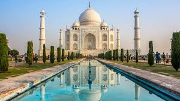
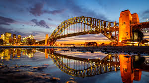
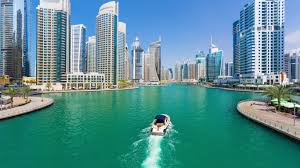

Travelling Gallery

INDIA
KOREA

AUSTRALLIA

DUBAI
Users Review
Singapore is one of the cleanest and safest countries we have ever visited, the MRT (underground) is not only a very efficient and cheap way of seeing Singapore City, it is a pleasure to be able to move about in a foreign city without fear of crime.
Pravel Sharma
Singapore
I saw America America way back when I was a teen and had not seen it since till today. I was surprised at how much I remembered of it. It was like reliving tales told by my grandparents and some of their siblings of their immigration stories.
Jason Harding
AmericaJapan is a very clean and exciting place to visit. The people are very friendly and always willing to help in a hotel or on the street. The best parts: The cities and the experiences in each.